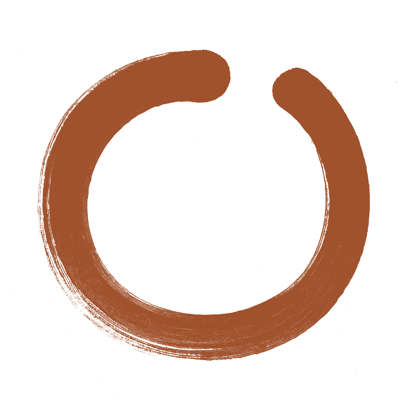
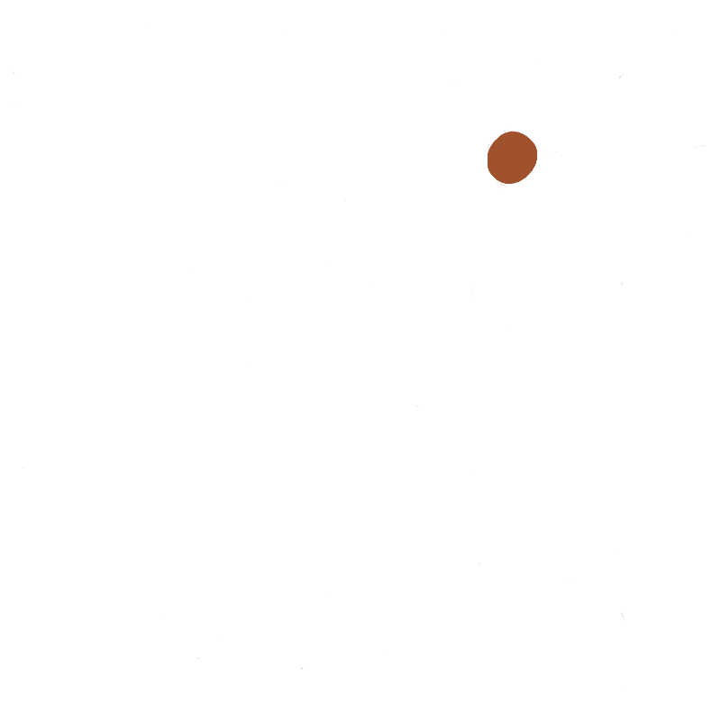

omfavn
om·fawnto embrace
Press and hold
What it is
Omfavn is a parenting coach on your iPhone. You record an ordinary evening at home, and Oline, the coach inside the app, writes back about it. She hears how things were said as well as the words.
Closed beta
For Danish-speaking families with children at home. It isn’t open yet. Send an email and you’re on the list. We’ll write when there’s something to install.
hello@omfavn.app